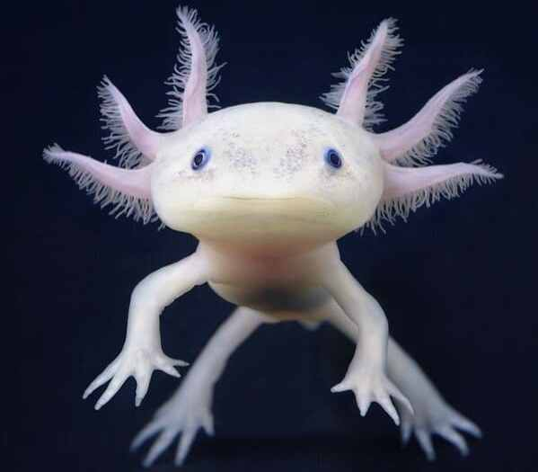

Preventing Extinction
Solutions to Prevent Extinction

- Restore their habitat to allow higher chance of survival of the eggs and young
- Build Axolotl sanctuaries in Lake Xochilmilco allowing higher quality of water and keeping the axolotl seperate from invasive fish
- Fight the fungus in the lake by culturing bacteria allowing the axolotl to boost their immunity towards the fungus in the lake
- It is possible to keep the species in captivity in zoos and aquariums around the world, but this does not help the problem of preventing extinction in the wild
- The National Autonomous University in Mexico did a survey and found the number of axolotl in Lake Xochilmilco went from 6,000 in 1998 to only about 100 in 2008, labeling the axolotl as a critically endangered species.